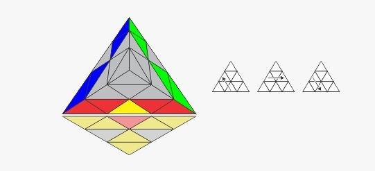
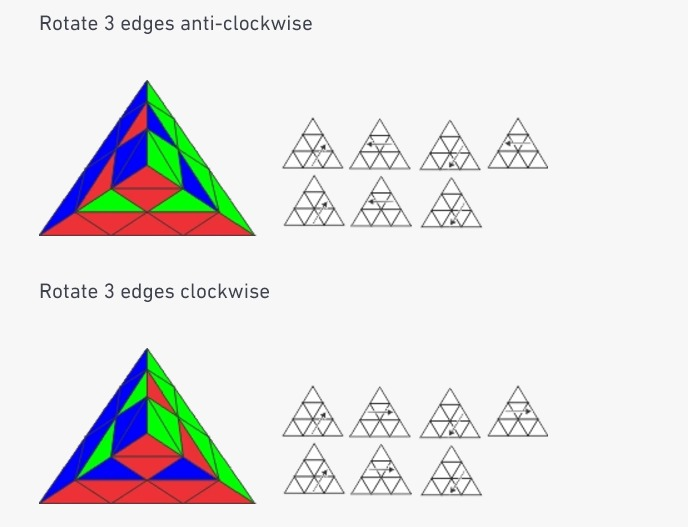
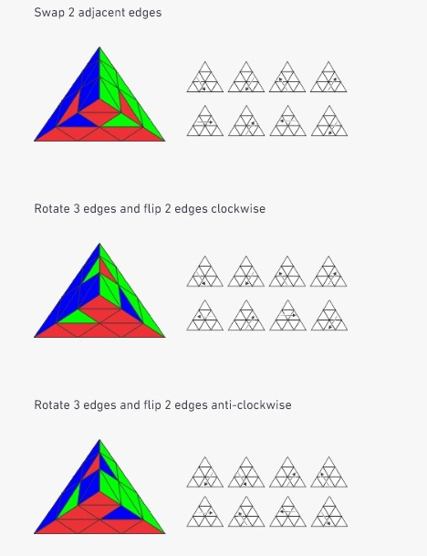

How to Solve the Pyraminx
Watch This Video for Step-by-Step Instructions
Before You Start
A Pyraminx is a 3-dimensional twisty puzzle with four equal-sized triangle-shaped sides, forming a tetrahedron. Each side has 3 tips, 3 edges, and 3 centers. At a beginner level, the puzzle is solved layer-by-layer in four steps:
- STEP 1 - Solve the First Layer Centers and Tips
- STEP 2 - Solve the First Layer Edges
- STEP 3 - Solve the Second Layer Centers
- STEP 4 - Solve the Last Layer Centers and Tip
Step 1: Solve the Yellow Centers and Tips
1. Find one tip that DOESN’T have the color yellow on it.
2. Hold your cube so that that tip is at the back.
3. Turn the top, left, and right sides until the yellow is in the front face.
4. Turn the tips to match.

Step 2: Solve the Yellow Edges
1. Turn the cube so that the yellow face is now at the bottom and the red bottom centers are in the front face.
2. Find the red/yellow edge piece.
3. Turn the top face until the red/yellow piece is in the front layer with the yellow side of that piece facing you, as shown below.
4. Perform the steps below to put the red/yellow edge piece in place.
Keeping yellow at the bottom, turn the Pyraminx so that a different color is facing you. Repeat the steps above for the blue and green sides.
Possible Problem:
The edge you are looking for is in the bottom layer but in the wrong place or in the correct place but the wrong way around. Perform these steps to pop the piece into the top layer.
Step 3: Solve the Red, Blue, Green Centers and Tip
1. Turn the top so that all the center colors match.
2. Turn the top tip to match the center colors.
Step 4: Solve the Red, Blue, Green Edges
You will now have one of three different cases. Choose the option below that matches your situation and follow the steps to ultimately solve your Pyraminx.

Great! You're Done!
Congratulations on solving your Pyraminx!